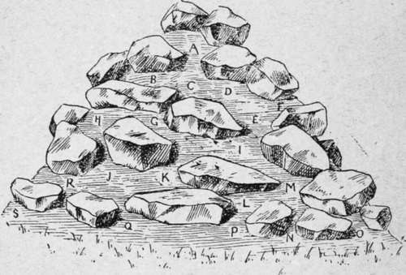
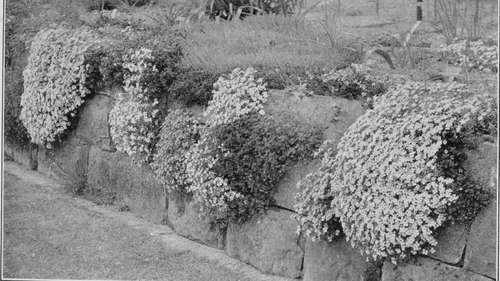

Chapter XXII. Rock Gardening And Alpine Plants
Description
This section is from the book "Town Gardening", by Mary Hampden. Also available from Amazon: Town Gardening.
Chapter XXII. Rock Gardening And Alpine Plants
Why Plants are safer in Rockeries. Where to make Rockeries. Small Perennials and Alpines. Other Plants to Try. Rockeries all for Bulbous Plants.
ROCKERIES are homes in which many plants will keep in full health that would sicken and fail on level soil. The reasons are various. There is a depth of good earth ; the big stones not only give shelter but prevent the soil from drying up, yet keep warmth in it and intercept frost. The plants have occasional shade, as the sun shifts, and are less pelted by hail, less battered by winds, than their border brethren. Any bank may have a rockery side, so may a raised bed or grass plot. Other rockeries can be built against front or back steps, along the edge of the verandah, to surround tubs, barrels, box-beds, rain-water butts, on area slopes, against any walls, of course. They do not need garden space, for a mound of good soil thrown down on some stones, broken bricks, and coarser earth, ringed round by rocks, dotted over by slabs and craggy pieces, becomes a rockery whether it is upon a roof-top, a porch-top, a backyard, or the area pavement.
All small hardy perennials are suitable for filling rockeries, and we have already considered which are the most likely to do well in towns. There are some ' alpines,' etc., that may settle down comfortably in rockeries though they would fail on the level.
Japanese pinks (Dianthus Heddewigii) are gay, rich, and beautiful, and florists offer young plants freely in May. Viola cornuta is a spreading plant that becomes covered with daintiest lavender-blue blossoms that continue all the floral months, if seed-vessels are assiduously picked off. Pink and white alpine poppies are real gems. Purple rock-cress (Aubrietia) will make mauve sheets very early in the year, and there are crimson, rose, red-violet, and blue varieties also.
Other plants that should be tried, though only experience can decide if they will consent to become town-dwellers, are the perennials— llthospermum prostratum. Evergreen trailer, with blue flowers. nepeta mussini. Lavender-blue spikes. i ft. tall.
Oxalis Corniculata Atropurpurea
Gold, with bronze foliage. 7 in. platycodon mariesii. Deep blue cup flowers.
Saponaria Ocymoides
Trailer. Rose pink.
Saponaria Officinalis Plena
Double. Pink, lift.
Veronica Spicata
Blue, in spikes, i\ft.
Veronica Spicata Alba Grandiflora
Pure white, i\ft.
Achillea Tomentosa
Gold. 6 in.
Potentilla, Gibson's Scarlet
Single verm ilion flowers, ift.
Solidago Buckleyi
A miniature golden rod. 1 ft.
Instructions for rockery building have been given in Chapter II. There may be much soil and few rocks. Just a dozen or so boulders and slabs will turn a twenty-four-foot length of wide border into one type of rock garden, while a compact rockery will show scarcely any soil between the plants when these have grown to maturity. Let the soil be rich six inches below the level or dwarf subjects, nine inches below for semi-dwarfs, one foot below for medium tall, and add more manure two feet deep for giants. Care must be taken that no stones or rock slabs obstruct the way of roots. All should be kept on a slant, so that rain can run off after the ground is sufficiently soaked. Avoid uniformity of height. Employ tall and long rocks, short and long, broad and narrow, and of a great diversity of size. Place some pairs slanting away from each other; place other pairs leant together to touch their tips. Let there be similar diversity in the size of plants. Three-inch, or even two-inch high alpines have their worth, for growing in scarcely any soil in basin-hollows of large slabs of rock, where colour sheets will have real charm. A few lofty plants, such as red-hot pokers and golden rods, will prevent a monotonous appearance.
A Rockeried Mound.
A Iceland popples.
B Pansies.
C Arabis alpina.
D White pinks.
E Pink sweet-williams.
F Sedum spectabile.
G Colchicums.
H Crimson clove carnations. I White clove carnations. J Llnaria dalmatica.
K Gold Pansy.
L Dwarf red chrysanthemum.
M Anchusa italica.
N Iberis sempervirens.
O Blue lungwort.
P Geranium Endressi.
Q Mauve rock cress.
R Orange hawkweed.
S Blue hepatica.
Aubretias On The Wall.
A rockery all for bulbous plants would be a novel feature for a garden : ranunculuses, Spanish, English, and other irises, montbretias, allium moly, yellow, the summer snowflake (Leucojum aestivum), Turk's cap lilies, and Madonna lilies could furnish it from May to October, when the Caff re flag (Schizostylis), meadow-saffrons, and the autumn-flowering crocuses, crocus ochroleucus, cream-and-orange; C. pulchellus, lavender, blue-and-orange ; C. speciosus, violet-blue; C. sativus, yellow-and-violet, could fill a gap till winter crocuses, winter heliotrope, snowdrops, Christmas roses (in shady nooks), and the azure iris alata, would rise from the stones.
Continue to:
- prev: Chapter XXI. Violets, And Other Buttonhole Flowers
- Table of Contents
- next: Chapter XXIII. A Number Of Novel Suggestions